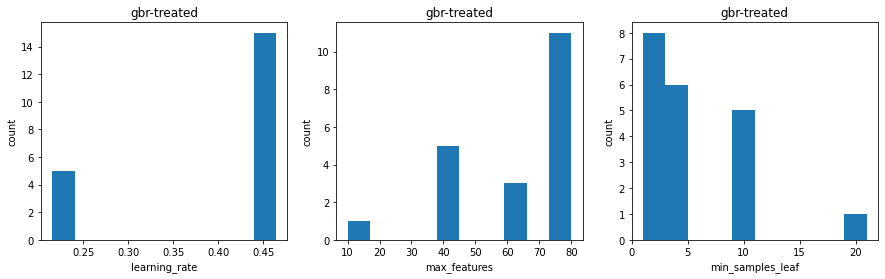
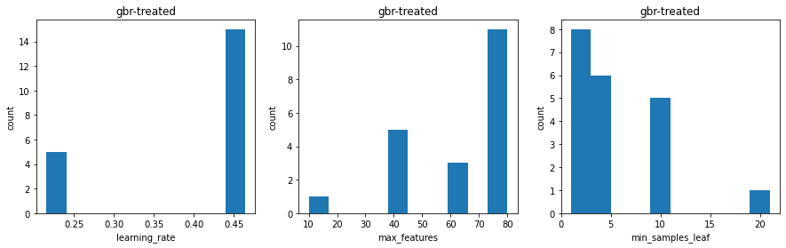

Direct Regression¶
# import libraries
import numpy as np
import pandas as pd
import matplotlib.pyplot as plt
import pyreadstat
import re
import string
import sklearn
from sklearn_pandas import DataFrameMapper
from sklearn.linear_model import LinearRegression, Lasso, Ridge
from sklearn.ensemble import GradientBoostingRegressor
from sklearn.svm import SVR
from skopt import BayesSearchCV
from tqdm import tqdm_notebook as tqdm
from reed import *
from cinspect import dependence, importance
from sklearn.model_selection import cross_val_score, cross_validate
import pickle
import time
# set global notebook options
pd.options.display.max_columns = 200
pd.options.display.max_rows = 500
%matplotlib inline
%load_ext autoreload
%autoreload 2
sklearn.__version__
'0.24.2'
Response Model¶
How well can we predict outcomes \(Y\) conditional on treatment \(T\) and other covariates \(Z\)?
Treatent variables¶
reduhl Completed re-education based on highest level of attainment
redudl Completed re-education based on detailed qualifications
redufl Completed re-education using highest lvl and detailed qualifications.
Outcome variables¶
Mental health in 2019 (mh). This is the transformed mental health scores from the aggregation of mental health items of the SF-36 Health Survey, as reported by the individual in 2019. It ranges from 0 to 100, with higher scores indicating better mental health.
Working hours in 2019 (wkhr) records the total number of hours the individual works in all jobs in a week on average. Working hours are set to 0 for those not working.
Hourly Wages in 2019 (rlwage) records the average hourly wage for the individual’s main job in 2019. Hourly wages are set to 0 for those not working and set to missing for those reporting working more than 100 hours a week.
Columns explicitly excluded¶
xwaveid (unique identifier)
p_rcom* (timing of completion of re-education, proxies treatment) TODO think about how we would include this
p_cotrl (first avail 2003)
p_rdf* (first avail 2012)
Select modeling parameters¶
outcome = 'y_Dwsce'#'y_wsce'
treatment = 'redufl'
optimisation_metric = 'neg_mean_squared_error'
evaluation_metrics = ('r2','neg_mean_squared_error')
log_outcome=False
cross_val_cache = "data/cross-val-all.pkl"
bootstrap_cache = "data/bootstrap-all.pkl"
Load Data¶
drop rows missing the specified treatment or outcome
data = pd.read_csv("all_vars.csv",index_col='xwaveid')
drop_missing_treatment_or_outcome(data, treatment, outcome)
if log_outcome:
data[outcome] = np.log(data[outcome]+data[outcome].min())
Dropped 592 rows missing treatment or outcome.
Set up models¶
Specify which models to use and the hyper-parameter space to search over for each
from sklearn.linear_model import Lasso, Ridge
from sklearn.ensemble import GradientBoostingRegressor
def construct_models():
models = [
Model('ridge',Ridge(),
parameters = {
'alpha':np.logspace(-1,4,30)
}
),
Model('lasso',Lasso(),
parameters = {
'alpha':np.logspace(-2,4,30)
}
),
Model('gbr',GradientBoostingRegressor(n_iter_no_change=20, max_depth=2),
parameters = {
'max_features':[10,20,40,60,80],
'learning_rate':np.logspace(-3,0,10),
'min_samples_leaf':np.logspace(0,3,10).astype(int)
}
),
]
return models
Prepare data for modeling¶
split into treated/control
impute missing values and scale
separate features from outcomes&treatments
# %load -s exclude_vars,seperate_and_transform_data direct_regression.py
def exclude_vars():
"""Return a list of variables that should not be included as features."""
treatments = ['^reduhl$', '^rehllt$', '^redudl$', '^redufl$', '^redllt$', '^refllt$']
outcomes = ['^rlwage$', '^mh$', '^mhbm$', '^wkhr$', '^y_']
other = [
'^p_rcom',
'^p_rdf',
'^p_cotrl',
'^xwaveid$',
'p_rcom18' # ?
'^aedcq', # indicate studying at start - these people should already have been removed
'^abnfsty',
'^aedcqfpt',
'^aedqstdy'
]
exclude = treatments + outcomes + other
return exclude
def seperate_and_transform_data(data, treatment, outcome):
transform = Pipeline([
('impute_missing', SimpleImputer()),
('scale', StandardScaler()),
])
exclude = exclude_vars()
control, treated = treatment_control_split(data, treatment)
features = regex_select(data.columns, exclude, exclude=True)
X0, y0 = split_and_transform(control, features, outcome, transform)
X1, y1 = split_and_transform(treated, features, outcome, transform)
# construct the full dataset (remove ordering by treatment in case of any order dependance in fit)
X = np.vstack((X0, X1))
y = np.concatenate((y0, y1))
indx = np.arange(len(y))
np.random.shuffle(indx)
X = X[indx, :]
y = y[indx]
return X0, X1, y0, y1, X, y, features
X0, X1, y0, y1, X, y, features = seperate_and_transform_data(data, treatment, outcome)
print("Number of features:",len(features))
Treated:773, Control:4181
Number of features: 638
Compute unconditional/unadjusted estimate of treatment effect¶
# %load -s print_unconditional_effects direct_regression.py
def print_unconditional_effects(data, treatment, y0, y1):
print(f"Proportion Treated:{100*data[treatment].mean():.0f}%")
print(f"Average outcome under Control:{y0.mean():.2f}±{y0.std()/np.sqrt(len(y0)):.2f}")
print(f"Average outcome under Treatment:{y1.mean():.2f}±{y1.std()/np.sqrt(len(y1)):.2f}")
print(f"Unadjusted treatment estimate {y1.mean() - y0.mean():.2f}")
print_unconditional_effects(data, treatment, y0, y1)
Proportion Treated:16%
Average outcome under Control:76.98±14.61
Average outcome under Treatment:425.08±37.85
Unadjusted treatment estimate 348.10
(Nested) cross-validate to evaluate model performance¶

# %load -s nested_cross_val direct_regression.py
def nested_cross_val2(
construct_models,
cache_name,
X0, X1, y0, y1,
optimisation_metric,
evaluation_metrics,
innercv=None,
outercv=None,
load_from_cache=False,
):
if load_from_cache:
with open(cache_name, 'rb') as f:
models, results = pickle.load(f)
else:
models = construct_models()
results = {}
for model in models:
print(f"Fitting {model.name} ...", end='')
results0 = model.nested_cv_fit_evaluate(
X0, y0, optimisation_metric, evaluation_metrics,
inner_cv=innercv, outer_cv=outercv)
results1 = model.nested_cv_fit_evaluate(
X1, y1, optimisation_metric, evaluation_metrics,
inner_cv=innercv, outer_cv=outercv)
results[model.name] = (results0, results1)
print("Done")
print(f"Caching results to {cache_name}")
with open(cache_name, 'wb') as f:
pickle.dump((models, results), f)
return models, results
models, results = nested_cross_val2(
construct_models,
cross_val_cache,
X0, X1, y0, y1,
optimisation_metric,
evaluation_metrics,
innercv=3,
outercv=4,
load_from_cache=False)
Fitting ridge ...Fitting 3 folds for each of 30 candidates, totalling 90 fits
Fitting 3 folds for each of 30 candidates, totalling 90 fits
Fitting 3 folds for each of 30 candidates, totalling 90 fits
Fitting 3 folds for each of 30 candidates, totalling 90 fits
Fitting 3 folds for each of 30 candidates, totalling 90 fits
Fitting 3 folds for each of 30 candidates, totalling 90 fits
Fitting 3 folds for each of 30 candidates, totalling 90 fits
Fitting 3 folds for each of 30 candidates, totalling 90 fits
Done
Fitting lasso ...Fitting 3 folds for each of 30 candidates, totalling 90 fits
Fitting 3 folds for each of 30 candidates, totalling 90 fits
Fitting 3 folds for each of 30 candidates, totalling 90 fits
Fitting 3 folds for each of 30 candidates, totalling 90 fits
Fitting 3 folds for each of 30 candidates, totalling 90 fits
Fitting 3 folds for each of 30 candidates, totalling 90 fits
Fitting 3 folds for each of 30 candidates, totalling 90 fits
Fitting 3 folds for each of 30 candidates, totalling 90 fits
Done
Fitting gbr ...Fitting 3 folds for each of 500 candidates, totalling 1500 fits
Fitting 3 folds for each of 500 candidates, totalling 1500 fits
Fitting 3 folds for each of 500 candidates, totalling 1500 fits
Fitting 3 folds for each of 500 candidates, totalling 1500 fits
Fitting 3 folds for each of 500 candidates, totalling 1500 fits
Fitting 3 folds for each of 500 candidates, totalling 1500 fits
Fitting 3 folds for each of 500 candidates, totalling 1500 fits
Fitting 3 folds for each of 500 candidates, totalling 1500 fits
Done
Caching results to data/cross-val-all.pkl
Report estimate ATE and model performance¶
Mean and Std of prediction performance for each model (both treatment & control surface)
Mean and Std of average treatment effect for each model
def estimate_causal_effect(X, models0, models1):
tau = []
for e0, e1 in zip(models0,models1):
y0 = e0.predict(X)
y1 = e1.predict(X)
tau.append(y1-y0)
# array of shape len(modelsi),len(X)
cate = np.array(tau)
# array of shape len(modelsi) with the ate estimate for each sample
ate = np.mean(cate,axis=1)
return ate
rows = []
index = []
for model_name, r in results.items():
tau = estimate_causal_effect(X, r[0]['estimator'],r[1]['estimator'])
row = {'ACE':tau.mean(),'ACE_std':tau.std()}
for m in evaluation_metrics:
key = f'test_{m}'
for name, result in zip(('control','treated'),r):
label=f"{name}_{m}"
label_std=f"{label}_std"
row[label]= result[key].mean()
std = result[key].std()
row[label_std] = result[key].std()
rows.append(row)
index.append(model_name)
metrics = pd.DataFrame(rows,index=index)
with pd.option_context('display.float_format', '{:,.2f}'.format):
display(metrics)
| ACE | ACE_std | control_r2 | control_r2_std | treated_r2 | treated_r2_std | control_neg_mean_squared_error | control_neg_mean_squared_error_std | treated_neg_mean_squared_error | treated_neg_mean_squared_error_std | |
|---|---|---|---|---|---|---|---|---|---|---|
| ridge | 347.42 | 22.93 | 0.21 | 0.02 | 0.10 | 0.04 | -704,484.48 | 72,754.68 | -1,005,507.26 | 272,704.91 |
| lasso | 347.47 | 25.08 | 0.24 | 0.04 | 0.12 | 0.03 | -679,370.10 | 70,206.73 | -973,808.90 | 252,049.28 |
| gbr | 314.59 | 47.30 | 0.25 | 0.02 | 0.11 | 0.04 | -663,563.10 | 59,270.09 | -987,477.23 | 261,066.24 |
fig, ax = plt.subplots(1,2,figsize=(15,5),sharey=True)
ax[0].bar(metrics.index, metrics['control_r2'], yerr=metrics['control_r2_std'], align='center', alpha=0.5, capsize=10)
ax[1].bar(metrics.index, metrics['treated_r2'], yerr=metrics['treated_r2_std'], align='center', alpha=0.5,capsize=10)
ax[0].set_ylabel('$R^2$')
ax[0].set_title('control model')
ax[1].set_title('treated model');
Visualise models¶
Features responsible for treatment effect heterogeneity & functional form (with uncertainty) - coefficeints for linear models - TODO permutation importance & partial dependence curves for non-linear models
def get_coef(estimator):
e = estimator
if hasattr(estimator,'best_estimator_'):
e = estimator.best_estimator_
if hasattr(e,'coef_'):
return e.coef_
return None
def coef_mean_std(estimator_lst):
n_estimators = len(estimator_lst)
coef = np.zeros((len(features),n_estimators))
for i, e in enumerate(estimator_lst):
coef[:,i] = get_coef(e)
mu = coef.mean(axis=1)
std = coef.std(axis=1)
return mu, std
def display_top_coefficients(model_name, r):
if get_coef(r[0]['estimator'][0]) is None:
return
with open('data/metadata.pkl','rb') as f:
meta = pickle.load(f)
contr, treat = r[0], r[1]
coef_t_mu, coef_t_std = coef_mean_std(treat['estimator'])
coef_c_mu, coef_c_std = coef_mean_std(contr['estimator'])
coefs = pd.DataFrame({
'feature':features,
'coef0':coef_c_mu,
'coef1':coef_t_mu
})
absv = np.vstack((coefs['coef0'].abs().values,coefs['coef1'].abs().values)).T
coefs['importance'] = absv.max(axis=1)
coefs['hetero'] = (coefs['coef1']-coefs['coef0']).abs()
labels = coefs['feature'].apply(meta.column_names_to_labels.get)
coefs.insert(0,'variable',labels)
print(f'Feature Coefficients for: {model_name}')
display(coefs.sort_values('importance',ascending=False).head(20))
for model_name, r in results.items():
display_top_coefficients(model_name,r)
Feature Coefficients for: ridge
| variable | feature | coef0 | coef1 | importance | hetero | |
|---|---|---|---|---|---|---|
| 190 | DV: Current weekly gross wages & salary - all ... | awscei | -84.188204 | -25.513167 | 84.188204 | 58.675037 |
| 130 | DV: Household current weekly gross wages & sal... | ahiwscei | -49.368396 | -10.801079 | 49.368396 | 38.567317 |
| 300 | G3 Total gross amount of most recent pay befor... | awscmga | -44.600967 | 6.081584 | 44.600967 | 50.682551 |
| 175 | HF4 Year of Birth | ahgyob | 43.598204 | 27.263369 | 43.598204 | 16.334836 |
| 443 | DV: Time in paid work - years | aehtjb | -37.905849 | -24.600939 | 37.905849 | 13.304911 |
| 275 | E29 Percent chance will find and accept job at... | ajbmpgj | 36.960818 | -3.675214 | 36.960818 | 40.636032 |
| 456 | DV: Age of oldest person in household | ahhold | -34.299580 | -15.815207 | 34.299580 | 18.484373 |
| 361 | H27 How likely to have a child/more children i... | aicexpct | 30.114104 | 8.771828 | 30.114104 | 21.342276 |
| 2 | DV: Age last birthday at June 30 2001 - person 01 | ahgage1 | -27.471891 | -17.568377 | 27.471891 | 9.903514 |
| 360 | H26 Like to have more children in the future | aiclike | 25.411102 | 9.210344 | 25.411102 | 16.200758 |
| 3 | DV: Age last birthday at June 30 2001 - person 02 | ahgage2 | -25.225651 | -10.876157 | 25.225651 | 14.349494 |
| 107 | DV: Child care total cost ($) [imputed] for al... | acpctci | 23.478212 | -8.494224 | 23.478212 | 31.972436 |
| 439 | DV: Tenure in current occupation (years) | ajbocct | -23.079802 | -8.919902 | 23.079802 | 14.159900 |
| 440 | DV: Tenure with current employer (years) | ajbempt | -22.539544 | -17.187522 | 22.539544 | 5.352021 |
| 450 | DV: Age youngest own child (excl. resident fos... | atcyng | -14.076822 | -20.975574 | 20.975574 | 6.898752 |
| 105 | DV: Child care total cost ($) [imputed] for al... | acsctci | 20.688445 | 9.747799 | 20.688445 | 10.940646 |
| 364 | J1 How many times have you been legally married | amrn | -20.304056 | -0.212872 | 20.304056 | 20.091185 |
| 307 | G10c And what period does that cover | awslyf | 19.991610 | 0.258062 | 19.991610 | 19.733549 |
| 208 | DV: Financial year estimated taxes on regular ... | atxtotn | 6.618131 | 19.863084 | 19.863084 | 13.244953 |
| 192 | DV: Financial year gross wages & salary ($) [i... | awsfei | -19.407242 | 0.614888 | 19.407242 | 20.022130 |
Feature Coefficients for: lasso
| variable | feature | coef0 | coef1 | importance | hetero | |
|---|---|---|---|---|---|---|
| 190 | DV: Current weekly gross wages & salary - all ... | awscei | -268.841027 | -94.235208 | 268.841027 | 174.605819 |
| 175 | HF4 Year of Birth | ahgyob | 222.746900 | 176.379845 | 222.746900 | 46.367054 |
| 450 | DV: Age youngest own child (excl. resident fos... | atcyng | 0.000000 | -66.425291 | 66.425291 | 66.425291 |
| 51 | Q1 Any children aged 14 or less | acccinhh | -53.871549 | 0.000000 | 53.871549 | 53.871549 |
| 275 | E29 Percent chance will find and accept job at... | ajbmpgj | 53.251110 | 0.000000 | 53.251110 | 53.251110 |
| 361 | H27 How likely to have a child/more children i... | aicexpct | 53.117124 | 0.000000 | 53.117124 | 53.117124 |
| 308 | G12 Check age and sex - currently eligible for... | abnage | -51.242365 | 0.000000 | 51.242365 | 51.242365 |
| 208 | DV: Financial year estimated taxes on regular ... | atxtotn | 0.000000 | 41.204794 | 41.204794 | 41.204794 |
| 434 | DV: E13 Occupation 2-digit ASCO | ajbmocc2 | -0.737719 | -37.160796 | 37.160796 | 36.423077 |
| 349 | H15b Age of child - Resident child 0001 | arcage1 | -10.393581 | -35.312532 | 35.312532 | 24.918951 |
| 456 | DV: Age of oldest person in household | ahhold | -34.913727 | -6.569190 | 34.913727 | 28.344536 |
| 325 | G29b2 Financial year rental property - profit ... | aoifrntp | -0.219795 | -30.821924 | 30.821924 | 30.602129 |
| 585 | SCQ:F3 Do fair share of looking after children | apashare | 29.562416 | 0.000000 | 29.562416 | 29.562416 |
| 608 | DV: Highest education level achieved | aedhigh1 | -15.265422 | -28.373626 | 28.373626 | 13.108205 |
| 580 | SCQ:E3g Personally entitled to use flexible st... | ajowpflx | 0.000000 | -26.566175 | 26.566175 | 26.566175 |
| 36 | HFL3 Dwelling security - Locked door/gate (wit... | adolgi | 3.786410 | -25.932901 | 25.932901 | 29.719310 |
| 300 | G3 Total gross amount of most recent pay befor... | awscmga | -25.496853 | 0.000000 | 25.496853 | 25.496853 |
| 443 | DV: Time in paid work - years | aehtjb | -23.401807 | 0.000000 | 23.401807 | 23.401807 |
| 333 | G34a Any credit, charge or store cards used at... | acrhavem | -21.759631 | 0.000000 | 21.759631 | 21.759631 |
| 130 | DV: Household current weekly gross wages & sal... | ahiwscei | -20.912719 | 0.000000 | 20.912719 | 20.912719 |
Bootstraped cross-validation to estimate parameter uncertainty¶
def extract_params(estimator):
return estimator.coef_
def bootstrapped_cross_val(
optimisation_metric,
extract_params_func,
inner_cv = 3,
load_from_cache=False,
cache_name=bootstrap_cache,
samples=10
):
if load_from_cache:
with open(cache_name, 'rb') as f:
results = pickle.load(f)
else:
models = construct_models()
results = {}
start = time.time()
for model in models:
print(f"Fitting {model.name} ...",end='')
results0 = model.bootstrap_cv_evaluate(X0,y0,optimisation_metric,extract_params,
bootstrap_samples=samples,return_estimator=True)
results1 = model.bootstrap_cv_evaluate(X1,y1,optimisation_metric,extract_params,
bootstrap_samples=samples,return_estimator=True)
results[model.name] = (results0, results1)
print("Done")
total = time.time()-start
print(f"Total time:{total} seconds")
print(f"Caching results to: {cache_name}")
with open(cache_name,'wb') as f:
pickle.dump(results,f)
return results
bootstrap_results = bootstrapped_cross_val(
optimisation_metric,
extract_params,
load_from_cache=False,
samples=20
)
Fitting ridge ...Fitting 5 folds for each of 30 candidates, totalling 150 fits
Fitting 5 folds for each of 30 candidates, totalling 150 fits
Fitting 5 folds for each of 30 candidates, totalling 150 fits
Fitting 5 folds for each of 30 candidates, totalling 150 fits
Fitting 5 folds for each of 30 candidates, totalling 150 fits
Fitting 5 folds for each of 30 candidates, totalling 150 fits
Fitting 5 folds for each of 30 candidates, totalling 150 fits
Fitting 5 folds for each of 30 candidates, totalling 150 fits
Fitting 5 folds for each of 30 candidates, totalling 150 fits
Fitting 5 folds for each of 30 candidates, totalling 150 fits
Fitting 5 folds for each of 30 candidates, totalling 150 fits
Fitting 5 folds for each of 30 candidates, totalling 150 fits
Fitting 5 folds for each of 30 candidates, totalling 150 fits
Fitting 5 folds for each of 30 candidates, totalling 150 fits
Fitting 5 folds for each of 30 candidates, totalling 150 fits
Fitting 5 folds for each of 30 candidates, totalling 150 fits
Fitting 5 folds for each of 30 candidates, totalling 150 fits
Fitting 5 folds for each of 30 candidates, totalling 150 fits
Fitting 5 folds for each of 30 candidates, totalling 150 fits
Fitting 5 folds for each of 30 candidates, totalling 150 fits
Fitting 5 folds for each of 30 candidates, totalling 150 fits
Fitting 5 folds for each of 30 candidates, totalling 150 fits
Fitting 5 folds for each of 30 candidates, totalling 150 fits
Fitting 5 folds for each of 30 candidates, totalling 150 fits
Fitting 5 folds for each of 30 candidates, totalling 150 fits
Fitting 5 folds for each of 30 candidates, totalling 150 fits
Fitting 5 folds for each of 30 candidates, totalling 150 fits
Fitting 5 folds for each of 30 candidates, totalling 150 fits
Fitting 5 folds for each of 30 candidates, totalling 150 fits
Fitting 5 folds for each of 30 candidates, totalling 150 fits
Fitting 5 folds for each of 30 candidates, totalling 150 fits
Fitting 5 folds for each of 30 candidates, totalling 150 fits
Fitting 5 folds for each of 30 candidates, totalling 150 fits
Fitting 5 folds for each of 30 candidates, totalling 150 fits
Fitting 5 folds for each of 30 candidates, totalling 150 fits
Fitting 5 folds for each of 30 candidates, totalling 150 fits
Fitting 5 folds for each of 30 candidates, totalling 150 fits
Fitting 5 folds for each of 30 candidates, totalling 150 fits
Fitting 5 folds for each of 30 candidates, totalling 150 fits
Fitting 5 folds for each of 30 candidates, totalling 150 fits
Done
Fitting lasso ...Fitting 5 folds for each of 30 candidates, totalling 150 fits
Fitting 5 folds for each of 30 candidates, totalling 150 fits
Fitting 5 folds for each of 30 candidates, totalling 150 fits
Fitting 5 folds for each of 30 candidates, totalling 150 fits
Fitting 5 folds for each of 30 candidates, totalling 150 fits
Fitting 5 folds for each of 30 candidates, totalling 150 fits
Fitting 5 folds for each of 30 candidates, totalling 150 fits
Fitting 5 folds for each of 30 candidates, totalling 150 fits
Fitting 5 folds for each of 30 candidates, totalling 150 fits
Fitting 5 folds for each of 30 candidates, totalling 150 fits
Fitting 5 folds for each of 30 candidates, totalling 150 fits
Fitting 5 folds for each of 30 candidates, totalling 150 fits
Fitting 5 folds for each of 30 candidates, totalling 150 fits
Fitting 5 folds for each of 30 candidates, totalling 150 fits
Fitting 5 folds for each of 30 candidates, totalling 150 fits
Fitting 5 folds for each of 30 candidates, totalling 150 fits
Fitting 5 folds for each of 30 candidates, totalling 150 fits
Fitting 5 folds for each of 30 candidates, totalling 150 fits
Fitting 5 folds for each of 30 candidates, totalling 150 fits
Fitting 5 folds for each of 30 candidates, totalling 150 fits
Fitting 5 folds for each of 30 candidates, totalling 150 fits
Fitting 5 folds for each of 30 candidates, totalling 150 fits
Fitting 5 folds for each of 30 candidates, totalling 150 fits
Fitting 5 folds for each of 30 candidates, totalling 150 fits
Fitting 5 folds for each of 30 candidates, totalling 150 fits
Fitting 5 folds for each of 30 candidates, totalling 150 fits
Fitting 5 folds for each of 30 candidates, totalling 150 fits
Fitting 5 folds for each of 30 candidates, totalling 150 fits
Fitting 5 folds for each of 30 candidates, totalling 150 fits
Fitting 5 folds for each of 30 candidates, totalling 150 fits
Fitting 5 folds for each of 30 candidates, totalling 150 fits
Fitting 5 folds for each of 30 candidates, totalling 150 fits
Fitting 5 folds for each of 30 candidates, totalling 150 fits
Fitting 5 folds for each of 30 candidates, totalling 150 fits
Fitting 5 folds for each of 30 candidates, totalling 150 fits
Fitting 5 folds for each of 30 candidates, totalling 150 fits
Fitting 5 folds for each of 30 candidates, totalling 150 fits
Fitting 5 folds for each of 30 candidates, totalling 150 fits
Fitting 5 folds for each of 30 candidates, totalling 150 fits
Fitting 5 folds for each of 30 candidates, totalling 150 fits
Done
Fitting gbr ...Fitting 5 folds for each of 500 candidates, totalling 2500 fits
Fitting 5 folds for each of 500 candidates, totalling 2500 fits
Fitting 5 folds for each of 500 candidates, totalling 2500 fits
Fitting 5 folds for each of 500 candidates, totalling 2500 fits
Fitting 5 folds for each of 500 candidates, totalling 2500 fits
Fitting 5 folds for each of 500 candidates, totalling 2500 fits
Fitting 5 folds for each of 500 candidates, totalling 2500 fits
Fitting 5 folds for each of 500 candidates, totalling 2500 fits
Fitting 5 folds for each of 500 candidates, totalling 2500 fits
Fitting 5 folds for each of 500 candidates, totalling 2500 fits
Fitting 5 folds for each of 500 candidates, totalling 2500 fits
Fitting 5 folds for each of 500 candidates, totalling 2500 fits
Fitting 5 folds for each of 500 candidates, totalling 2500 fits
Fitting 5 folds for each of 500 candidates, totalling 2500 fits
Fitting 5 folds for each of 500 candidates, totalling 2500 fits
Fitting 5 folds for each of 500 candidates, totalling 2500 fits
Fitting 5 folds for each of 500 candidates, totalling 2500 fits
Fitting 5 folds for each of 500 candidates, totalling 2500 fits
Fitting 5 folds for each of 500 candidates, totalling 2500 fits
Fitting 5 folds for each of 500 candidates, totalling 2500 fits
Fitting 5 folds for each of 500 candidates, totalling 2500 fits
Fitting 5 folds for each of 500 candidates, totalling 2500 fits
Fitting 5 folds for each of 500 candidates, totalling 2500 fits
Fitting 5 folds for each of 500 candidates, totalling 2500 fits
Fitting 5 folds for each of 500 candidates, totalling 2500 fits
Fitting 5 folds for each of 500 candidates, totalling 2500 fits
Fitting 5 folds for each of 500 candidates, totalling 2500 fits
Fitting 5 folds for each of 500 candidates, totalling 2500 fits
Fitting 5 folds for each of 500 candidates, totalling 2500 fits
Fitting 5 folds for each of 500 candidates, totalling 2500 fits
Fitting 5 folds for each of 500 candidates, totalling 2500 fits
Fitting 5 folds for each of 500 candidates, totalling 2500 fits
Fitting 5 folds for each of 500 candidates, totalling 2500 fits
Fitting 5 folds for each of 500 candidates, totalling 2500 fits
Fitting 5 folds for each of 500 candidates, totalling 2500 fits
Fitting 5 folds for each of 500 candidates, totalling 2500 fits
Fitting 5 folds for each of 500 candidates, totalling 2500 fits
Fitting 5 folds for each of 500 candidates, totalling 2500 fits
Fitting 5 folds for each of 500 candidates, totalling 2500 fits
Fitting 5 folds for each of 500 candidates, totalling 2500 fits
Done
Total time:6501.582203626633 seconds
Caching results to: data/bootstrap-all.pkl
Average treatment effects¶
for model_name, (results0, results1) in bootstrap_results.items():
models0 = [r['estimator'] for r in results0]
models1 = [r['estimator'] for r in results1]
ate = estimate_causal_effect(X,models0, models1)
print(f'{model_name}, {ate.mean():.2f} ± {ate.std()/np.sqrt(len(ate)-1):.2f}')
ridge, 343.67 ± 8.38
lasso, 356.33 ± 6.76
gbr, 350.96 ± 16.37
Distribution of hyper-parameters¶
from collections import defaultdict
def hyperparam_distributions(samples) -> {str:[]}:
"""Returns a dict from hyper-parameter name to the best values for that hyper-parameter over the samples."""
distributions = defaultdict(list)
for sample in samples:
h = sample['estimator'].best_params_
for key, value in h.items():
distributions[key].append(value)
return distributions
def plot_hyperparam_distributions(samples, title) -> None:
distributions = hyperparam_distributions(samples)
k = len(distributions)
fig, axes = plt.subplots(1,k,figsize=(k*5,4))
if k == 1:
axes = [axes]
for i, (key, values) in enumerate(distributions.items()):
ax = axes[i]
ax.hist(values)
ax.set_title(title)
ax.set_xlabel(key)
ax.set_ylabel('count')
return fig,axes
for model, (results0, results1) in bootstrap_results.items():
plot_hyperparam_distributions(results0,f"{model}-control")
plot_hyperparam_distributions(results1,f"{model}-treated")

 
